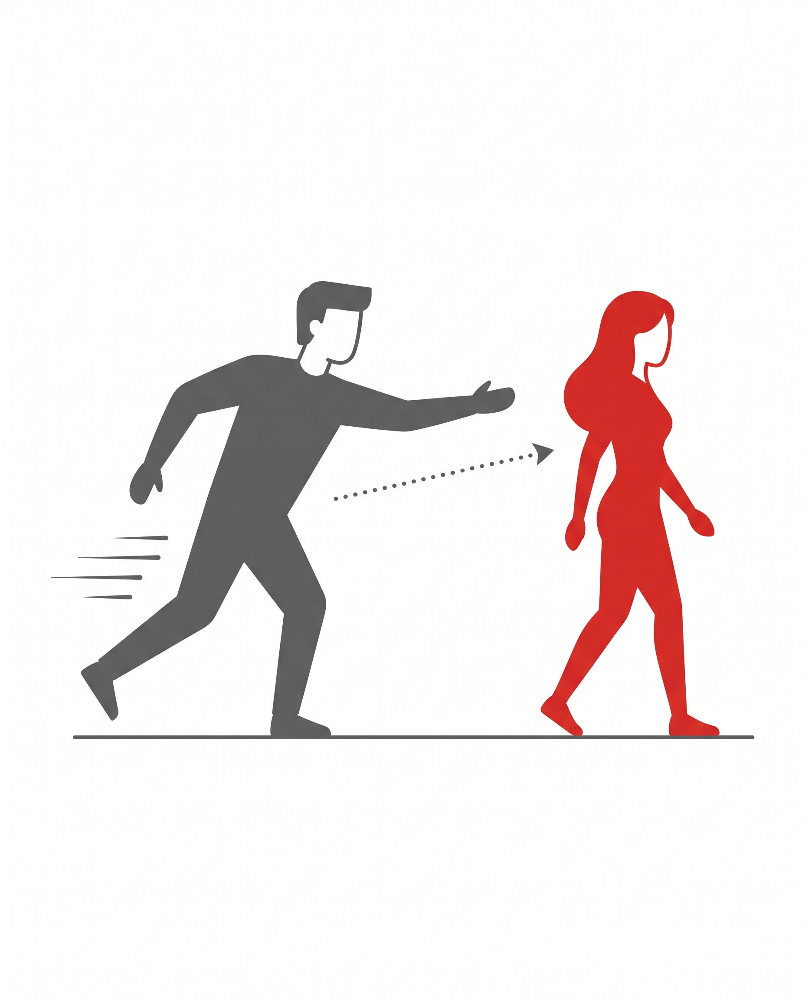
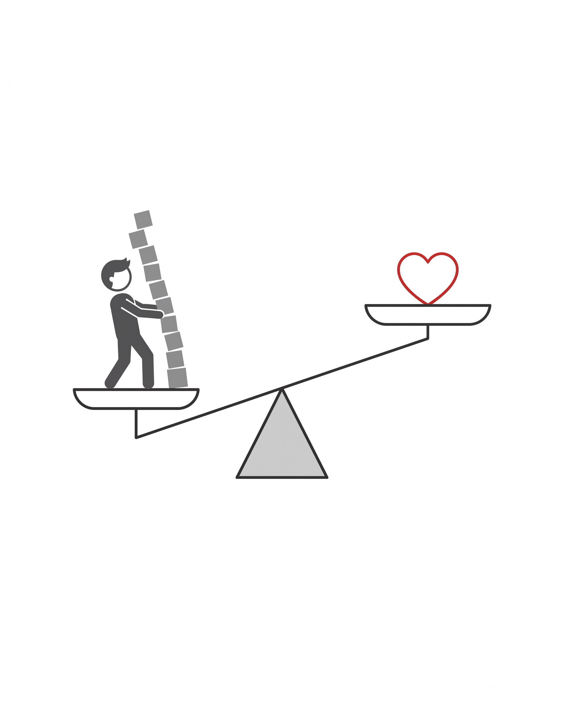
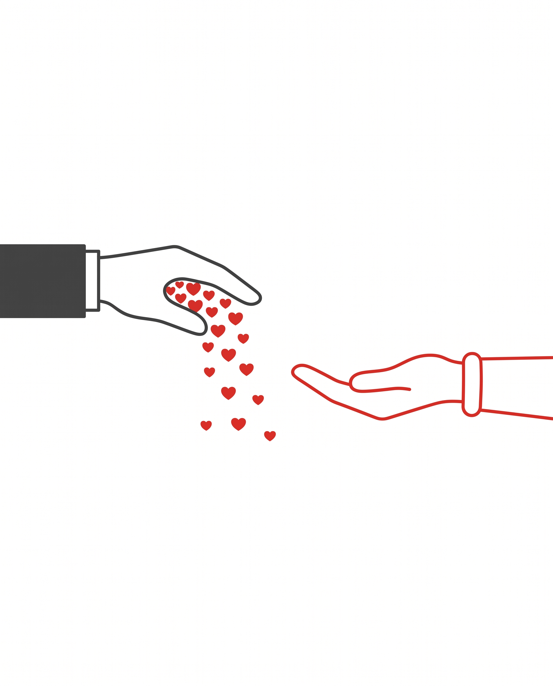
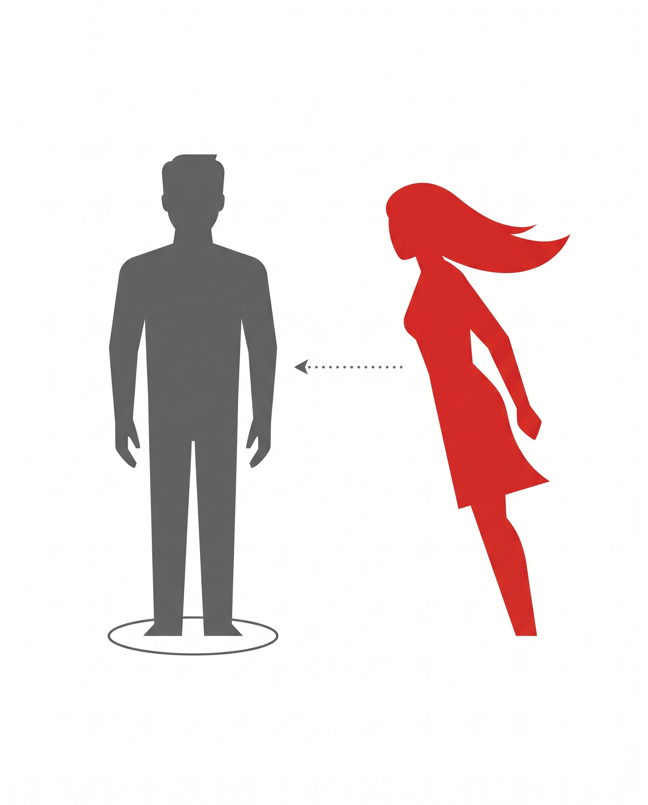
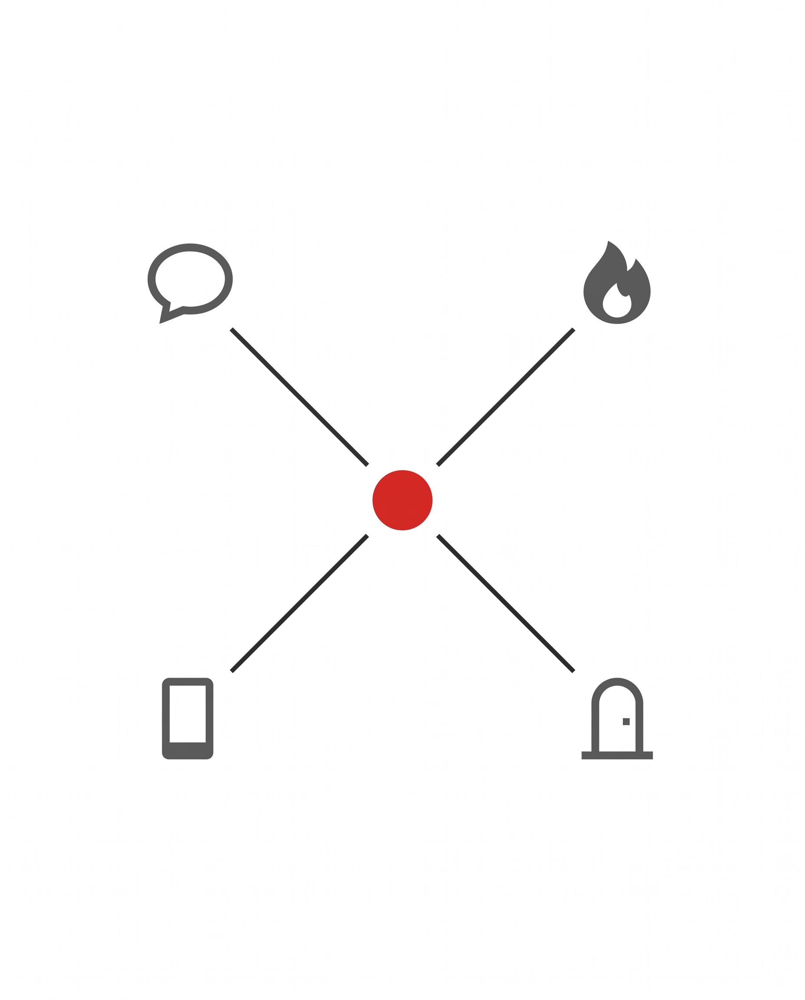
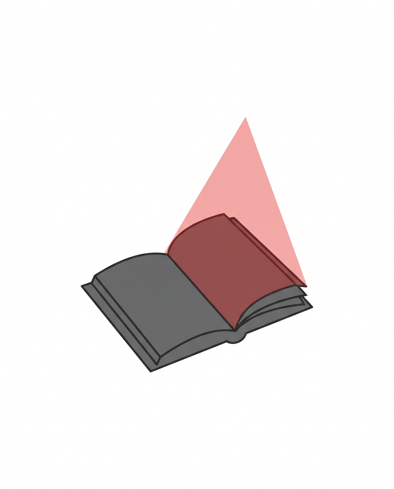

(Психологията, която обяснява защо "правилното" поведение всъщност те проваля)

Ето нещо, което звучи като парадокс, но всъщност не е.
Колкото повече усилие полага един мъж, за да спечели вниманието на дадена жена, толкова по-малко тя реално го желае.
Звучи нелогично, нали? В крайна сметка са ни учили, че усилието се възнаграждава. Че вниманието, грижата и постоянството печелят сърцето на другия човек. Че ако просто направиш достатъчно, ако бъдеш достатъчно добър, достатъчно внимателен, достатъчно упорит, накрая ще получиш това, което искаш.
Проблемът е, че когато става въпрос за привличане между мъж и жена, точно това вярване е причината мнозина мъже да остават сами, объркани и разочаровани, докато гледат как други, на пръв поглед по-обикновени мъже, привличат жени с видимо по-малко усилие.
Нека разгледаме защо се случва това, и на какво реално се дължи..
Има един поведенчески модел, който се повтаря отново и отново, независимо дали говорим за 15-годишен младеж, който тепърва навлиза в света на запознанствата, или 30-годишен, който наскоро излиза от дълга връзка и се опитва да разбере правилата наново.
Моделът изглежда горе-долу така.
Мъжът среща жена, която му харесва. Той решава, съзнателно или не, че начинът да спечели интереса ѝ е да инвестира максимално, бързо и видимо. Пише пръв. Планира срещите. Помни всеки детайл. Компенсира всяка несигурност с още повече внимание, още повече комплименти, още повече наличност.
За известно време това изглежда, че работи, защото тя отговаря учтиво, приема поканите, приема вниманието. Но постепенно, почти незабележимо, интересът ѝ намалява, докато неговият остава същият или дори се увеличава. И накрая идва изречението, на което всеки мъж, попада в този цикъл - "Ти си добър човек, но..."
Мъжете, които попадат в този модел, обикновено стигат до едно от две погрешни заключения. Или решават, че просто не са достатъчно добри, недостатъчно високи, богати или интересни. Или решават, че жените като цяло са необясними и непредвидими, и просто трябва да продължат да опитват, докато не им излезе късметът.
И двете заключения са грешни. Истинската причина е много по-конкретна и, за щастие, много по-проста.
За да разберем защо се случва това, трябва да разгледаме един добре установен принцип на човешката психика, наречен ефект на положеното усилие.

В основата си този принцип казва следното: хората ценят най-силно нещата, в които самите те са вложили усилие, време или емоция, а не нещата, които просто са получили готови.
Не е случайно защо ценим повече целта, за която сме се борили, отколкото тази, която ни е поднесена. Не е случайно защо държим повече на проекта, в който сме вложили безсънни нощи, отколкото на този, който е паднал в скута ни.
Същият механизъм управлява и емоционалната привързаност между двама души.
Когато мъж инвестира прекалено много, прекалено бързо, и прекалено видимо, той несъзнателно отнема от жената възможността самата тя да инвестира. А без нейна собствена инвестиция, психологически просто няма основа, върху която да се изгради нейно собствено желание.

Тя не е "платила цена" за връзката, затова не я цени по начина, по който би я ценила, ако сама беше вложила усилие в нея.
С други думи, колкото повече гони мъжът, толкова по-малко има тя причина да го гони на свой ред, защото цялата работа вече е свършена вместо нея.
Това не е теория без покритие. Принципът е изследван и документиран в психологията от десетилетия, и се проявява навсякъде, където съществува човешка привързаност, не само в романтичните връзки. Разликата е, че почти никой не го обяснява конкретно в запознанствата и взаимоотношенията между двата пола, а вместо това продължава да преподава точно обратната стратегия, повече усилие, повече внимание, повече наличност.
Ако наблюдаваш внимателно мъжете, на които им се получава последователно с жени, ще забележиш нещо, което на пръв поглед изглежда странно.
Те рядко са тези, които преследват. Обикновено са по-скоро тези, които биват преследвани.

И важното тук е, че това няма нищо общо с ръст, доходи или физическа привлекателност, защото сред тях ще откриеш мъже с абсолютно всякакъв тип външност и финансово положение. Общото между тях не е какво имат, а какво правят, или по-точно, какво не правят.
Те не отнемат от жената възможността да инвестира. Съзнателно или несъзнателно, те оставят пространство, в което тя сама решава да положи усилие, да прояви инициатива, да покаже интерес първа. И именно този неин собствен принос е онова, което задейства реалното желание, а не поредният комплимент или поредното демонстрирано внимание от негова страна.
Разликата звучи малка на теория, но на практика е огромна. Защото означава, че привличането не е въпрос на вродена харизма, с която едни мъже се раждат, а други не.
То е въпрос на конкретно, наблюдаемо поведение, което може да се разбере, научи и повтори.
Тук е моментът да изясним нещо важно, защото знаем много добре какво си мислиш в момента.
Звучи ли ти познато усещането, че си виждал подобни обещания и преди? Списъци с "тайни техники", заучени реплики, "психологически трикове", които уж карат жените да губят ума си?
Ако да, разбирам напълно скептицизма ти, защото индустрията за запознанства, която дава съвети е пълна именно с такива обещания, и повечето от тях наистина не работят, или още по-лошо, карат мъжа да се чувства фалшив и неудобен в собствената си кожа.
Онова, за което говорим тук, е коренно различно от това. Не става въпрос за заучени реплики, ролеви игри или преструване на някой, който не си. Става въпрос за разбиране на конкретен, реален психологически механизъм, и за съзнателно, честно прилагане на поведение, което оставя пространство за нейната собствена инвестиция, вместо да я задушава с твоята.
Няма нищо манипулативно в това да спреш да отнемаш от някого възможността сам да реши, че те иска.
Въпросът, който остава, е следният. Как точно, стъпка по стъпка, се прилага това на практика, така че да работи последователно, а не случайно?
Именно това е онова, което ще разгледаме по-нататък, конкретната система от поведения, познати като инвестиционни тригери, които правят точно тази разлика, между мъжа, който продължава да гони, и мъжа, когото тя най-накрая започва да гони сама.
Инвестиционните тригери не са реплика, не са трик и не са единично действие, а са набор от конкретни, наблюдаеми модели на поведение, всеки от които отваря пространство за нейна собствена инвестиция в различен момент от взаимодействието.

Някои от тях се прилагат в самото начало, в момента на приближаване и първи контакт, когато повечето мъже или изобщо не действат от страх, или действат прекалено настойчиво от нерви.
Други се прилагат в самия флирт, в баланса между внимание и лека дистанция, който кара другата страна да остане любопитна, вместо да получи всичко наведнъж.
Трети се прилагат в дигиталната среда, в приложенията за запознанства и в преписката преди първата среща, място, където повечето мъже несъзнателно унищожават интереса още преди да са се видели на живо.
А четвърти се прилагат в самото начало на разговора, в първите секунди, в които се решава дали взаимодействието ще тръгне на някъде, или ще замре бързо.
Всеки от тези тригери сам по себе си е малка, лесна за прилагане промяна в поведението. Но приложени заедно, систематично, те правят точно разликата между цикъла на преследване, в който повечето мъже са заклещени, и обратната динамика, в която тя е тази, която инвестира първа.

Тази система не е разработена зад бюро, въз основа на теория, а е резултат от над две години наблюдение, тестване и усъвършенстване, приложени в стотици реални взаимодействия.
Тя е дело на мен, Денис Димов. Самият аз прекарах години в опити да следвам "правилния" подход, учтивост, усилие, постоянно внимание, преди да открия защо именно този подход систематично се проваля, и да прекарам следващите години в превръщането на едно наблюдение в повторяема, преподаваема система.
Тук е важно да съм напълно ясен за едно нещо. Целта не е да превърна никого в манипулатор или в различна версия на себе си. Целта е да сваля от плещите ти товара на постоянното преследване, и да ти покажа как да оставиш психологията да работи в твоя полза, вместо срещу теб, по начин, който остава честен и към теб, и към нея.
Пълната система от инвестиционни тригери, разгърната стъпка по стъпка, с конкретни примери и приложими сценарии за всяка от четирите ситуации, споменати по-горе, е събрана в книгата ми "Методът Тя Гони".
Заедно с основната книга получаваш и четири допълнителни ресурса, всеки фокусиран върху едно конкретно предизвикателство, ключа да преодолееш завинаги страха от заговаряне на непозната жена, конкретни техники как да флиртуваш по начин, който изгражда напрежение и любопитство, как да приложиш целия принцип и в дигиталната среда на приложенията за запознанства, и наръчник с конкретни начини да стартираш разговор, който да не замира след третото изречение.
Представи си следващия път, в който заговориш жена, която ти харесва, без вътрешния глас да ти повтаря всички причини, поради които вероятно ще се провалиш.
Представи си разговор, в който не ти се налага да измисляш следващия въпрос, защото самата тя проявява инициатива да го продължи.
Представи си усещането да получиш съобщение от нея, не защото си написал пети път, а защото самата тя е искала да ти пише.
Именно това е разликата, за която говорим, не поредната "техника", а преминаване от позицията на мъжа, който постоянно се чуди дали е направил достатъчно, към позицията на мъжа, за когото тя самата мисли.
Какво получаваш и на каква цена?
Книгата с всичките четири бонуса надхвърля 150€, като в момента офертата е достъпна само за 17,90 евро.
Тази оферта важи до изчерпване на наличност.
Първото издание беше разпродадено под 30 дни.
Сега тече втора партида от 400 копия, която намалява с всеки изминал ден.
Вземи своето копие от бутона отдолу 👇
Провери наличност на книгата "Методът Тя Гони"Книгата "Методът Тя Гони" НЕ е магическо хапче.
Ако търсиш решение, което да реши проблема ти за 1 ден - това НЕ е за теб.
Ако вярваш че парите, ръста и статуса са най-важното нещо - това отново НЕ е за теб.
Ако не си готов да вземеш на сериозно темата, както отделяш време на другите важни неща от живота - то тогава методът НЯМА да работи за теб.
Но ако:
То тогава това може да бъде най-важната инвестиция в живота ти.
Провери наличност на книгата "Методът Тя Гони"